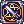
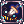

| Skill
|
Type
|
Properties
|
Description
|
| Dagger & Bow Mastery
|
Passive
|
|
When equipped with Dagger or Bow, increases physical damage to enemies by their size.
- [Lv 1] : Small +1%, Medium +2%, Large +2%
- [Lv 2] : Small +2%, Medium +3%, Large +4%
- [Lv 3] : Small +3%, Medium +5%, Large +6%
- [Lv 4] : Small +4%, Medium +6%, Large +8%
- [Lv 5] : Small +5%, Medium +8%, Large +10%
- [Lv 6] : Small +6%, Medium +9%, Large +12%
- [Lv 7] : Small +7%, Medium +11%, Large +14%
- [Lv 8] : Small +8%, Medium +12%, Large +16%
- [Lv 9] : Small +9%, Medium +14%, Large +18%
- [Lv10] : Small +10%, Medium +15%, Large +20%
|
|  Magic Sword Mastery
|
Passive
|
|
When equipped with daggers or one-handed swords, increases magical damage to enemies by size.
- [Lv 1] : Small +2%, Medium +2%, Large +2%
- [Lv 2] : Small +3%, Medium +3%, Large +3%
- [Lv 3] : Small +5%, Medium +5%, Large +5%
- [Lv 4] : Small +6%, Medium +6%, Large +6%
- [Lv 5] : Small +8%, Medium +8%, Large +8%
- [Lv 6] : Small +9%, Medium +9%, Large +9%
- [Lv 7] : Small +11%, Medium +11%, Large +11%
- [Lv 8] : Small +12%, Medium +12%, Large +12%
- [Lv 9] : Small +14%, Medium +14%, Large +14%
- [Lv10] : Small +15%, Medium +15%, Large +15%
|
 Strip Shadow Strip Shadow
|
Support
|
- Max Level: 5
- Target: Enemy
- SP Cost: 25 + (4 x Skill Level)
- Fixed Cast Time: 1.0s
- Variable Cast Time: 1.0s
- Cast Delay: 1.0s
- Cooldown: 2.0s
|
Strips all of the target's Shadow Equipment and prevent them from equipping for the skill duration.
If used on a monster, it will instead decrease their physical and magical resistance.
- [Lv 1] : Strip Chance: 20%, Duration: 60 seconds
- [Lv 2] : Strip Chance: 25%, Duration: 70 seconds
- [Lv 3] : Strip Chance: 30%, Duration: 80 seconds
- [Lv 4] : Strip Chance: 35%, Duration: 90 seconds
- [Lv 5] : Strip Chance: 40%, Duration: 100 seconds
|
| Abyss Dagger
|
Damage
|
- Max Level: 5
- Target: Caster
- SP Cost: 56 + (4 x Skill Level)
- Fixed Cast Time: None
- Variable Cast Time: None
- Cast Delay: 0.5s
- Cooldown: 0.4s (Lv 5)
|
Inflicts melee physical damage to nearby targets within 7x7 cells around the caster.
Increases damage of  Fatal Menace during the skill duration. The damage further increases based on the caster's Base Level and POW.
Requires a Dagger or One-Handed Sword. Fatal Menace during the skill duration. The damage further increases based on the caster's Base Level and POW.
Requires a Dagger or One-Handed Sword.
- [Lv 1] : ATK 1000% per hit, Duration: 3 seconds
- [Lv 2] : ATK 1900% per hit, Duration: 6 seconds
- [Lv 3] : ATK 2800% per hit, Duration: 9 seconds
- [Lv 4] : ATK 3700% per hit, Duration: 12 seconds
- [Lv 5] : ATK 4600% per hit, Duration: 15 seconds
|
| Unlucky Rush
|
Damage
|
- Max Level: 5
- Target: Enemy
- SP Cost: 25 + (5 x Skill Level)
- Fixed Cast Time: None
- Variable Cast Time: None
- Cast Delay: 0.5s
- Cooldown: 0.25s (Lv 5)
|
Instantly dashes to the target and inflicts melee physical damage, which also has a chance to inflict Unlucky status on the target.
Damage additionally increases according to the caster's Base Level and POW.
- [Lv 1] : ATK 400%, Unlucky Chance: 40%
- [Lv 2] : ATK 700%, Unlucky Chance: 50%
- [Lv 3] : ATK 1000%, Unlucky Chance: 60%
- [Lv 4] : ATK 1300%, Unlucky Chance: 70%
- [Lv 5] : ATK 1600%, Unlucky Chance: 80%
|
| Chain Reaction Shot
|
Damage
|
- Max Level: 5
- Target: Enemy
- SP Cost: 25 + (10 x Skill Level)
- Fixed Cast Time: 1.0s
- Variable Cast Time: 1.0s
- Cast Delay: None
- Cooldown: 1.0s
|
Inflicts ranged physical damage to the target and surrounding enemies. Inflicts additional ranged physical damage to targets within 7x7 cells of the main target.
Damage additionally increases according to the caster's Base Level and CON.
Requires a Bow and consumes 7 Arrows (you need to have at least 8 arrows to use this skill).
- [Lv 1] : ATK 850%(1st)/2950%(2nd), AoE: 5x5 cells
- [Lv 2] : ATK 1700%(1st)/5300%(2nd), AoE: 5x5 cells
- [Lv 3] : ATK 2550%(1st)/7650%(2nd), AoE: 7x7 cells
- [Lv 4] : ATK 3400%(1st)/10000%(2nd), AoE: 7x7 cells
- [Lv 5] : ATK 4250%(1st)/12350%(2nd), AoE: 9x9 cells
|
|  From the Abyss
|
Support
|
- Max Level: 5
- Target: Caster
- SP Cost: 50 + (10 x Skill Level)
- Fixed Cast Time: None
- Variable Cast Time: None
- Cast Delay: None
- Cooldown: 60.0s
- AP Recovery: 4/8/12/16/20
|
Summons spheres containing power of the abyss for the skill duration.
5 Abyss Spheres are summoned instantly upon using this skill. Inflicting physical damage has a 15% chance to consume 1 Abyss Sphere to inflict Neutral elemental magic damage to the target and surrounding enemies within 9x9 cells around the target twice.
Summons Abyss Spheres over time.
Damage additionally increases according to the caster's Base Level and SPL.
- [Lv 1] : MATK: 600%/Hit, Duration: 30 seconds,
Abyss Sphere Interval: 3 seconds
- [Lv 2] : MATK: 1100%/Hit, Duration: 60 seconds,
Abyss Sphere Interval: 2.5 seconds
- [Lv 3] : MATK: 1600%/Hit, Duration: 90 seconds,
Abyss Sphere Interval: 2 seconds
- [Lv 4] : MATK: 2100%/Hit, Duration: 120 seconds,
Abyss Sphere Interval: 1.5 seconds
- [Lv 5] : MATK: 2600%/Hit, Duration: 150 seconds,
Abyss Sphere Interval: 1 seconds
|
| Abyss Slayer
|
Support
|
- Max Level: 10
- Target: Caster
- SP Cost: 100
- Fixed Cast Time: 1.0s
- Variable Cast Time: 2.0s
- Cast Delay: 0.5s
- Cooldown: 60.0s
- AP Cost: 150
|
Endows the caster's body with the power of abyss for 300 seconds.
The power of abyss increases the caster's abilities drastically.
- [Lv 1] : P.ATK/S.MATK +12, HIT +120
- [Lv 2] : P.ATK/S.MATK +14, HIT +140
- [Lv 3] : P.ATK/S.MATK +16, HIT +160
- [Lv 4] : P.ATK/S.MATK +18, HIT +180
- [Lv 5] : P.ATK/S.MATK +20, HIT +200
- [Lv 6] : P.ATK/S.MATK +22, HIT +220
- [Lv 7] : P.ATK/S.MATK +24, HIT +240
- [Lv 8] : P.ATK/S.MATK +26, HIT +260
- [Lv 9] : P.ATK/S.MATK +28, HIT +280
- [Lv10] : P.ATK/S.MATK +30, HIT +300
|
| Omega Abyss Strike
|
Support
|
- Max Level: 10
- Target: Ground
- SP Cost: 125
- Fixed Cast Time: 1.0s
- Variable Cast Time: 4.0s
- Cast Delay: 0.5s
- Cooldown: 3.0s
- AP Cost: 15
|
Drops the powerful meteorite at the targeted area, inflicting Neutral elemental magic damage to all targets within 9x9 cells.
Inflicts additional damage against Angel and Demon race monsters.
Damage additionally increases according to the caster's Base Level and SPL.
- [Lv 1] : MATK 2200%, Angel/Demon: 2350%
- [Lv 2] : MATK 4400%, Angel/Demon: 4700%
- [Lv 3] : MATK 6600%, Angel/Demon: 7050%
- [Lv 4] : MATK 8800%, Angel/Demon: 9400%
- [Lv 5] : MATK 11000%, Angel/Demon: 11750%
- [Lv 6] : MATK 13200%, Angel/Demon: 14100%
- [Lv 7] : MATK 15400%, Angel/Demon: 16450%
- [Lv 8] : MATK 17600%, Angel/Demon: 18800%
- [Lv 9] : MATK 19800%, Angel/Demon: 21150%
- [Lv10] : MATK 22000%, Angel/Demon: 23500%
|
| Deft Stab
|
Damage
|
- Max Level: 10
- Target: Enemy
- SP Cost: 42 + (3 x Skill Level)
- Fixed Cast Time: None
- Variable Cast Time: None
- Cast Delay: 0.5s
- Cooldown: 0.7s (Lv 10)
- AP Recovery: 3
|
Quickly attacks the target and its surroundings, inflicting melee physical damage.
Damage additionally increases according to the caster's Base Level and POW.
- [Lv 1] : ATK 600%, AoE: 5x5 cells
- [Lv 2] : ATK 950%, AoE: 5x5 cells
- [Lv 3] : ATK 1300%, AoE: 5x5 cells
- [Lv 4] : ATK 1650%, AoE: 5x5 cells
- [Lv 5] : ATK 2000%, AoE: 5x5 cells
- [Lv 6] : ATK 2350%, AoE: 7x7 cells
- [Lv 7] : ATK 2700%, AoE: 7x7 cells
- [Lv 8] : ATK 3050%, AoE: 7x7 cells
- [Lv 9] : ATK 3400%, AoE: 7x7 cells
- [Lv10] : ATK 3750%, AoE: 7x7 cells
|
| Abyss Square
|
Damage
|
- Max Level: 5
- Target: Ground
- SP Cost: 55 + (10 x Skill Level)
- Fixed Cast Time: 1.0s
- Variable Cast Time: 5.0s
- Cast Delay: 0.5s
- Cooldown: 3.0s
- AP Recovery: 5
|
Inflicts Neutral elemental magic damage by awakening the abyss within 7x7 cells in the targeted area. If the caster is within skill range, inflicts the damage twice. The damage is further increases based on the caster's Base Level, SPL and Magic Sword Mastery.
When From the Abyss is active, there is a chance to autocast Abyss Square, when inflicting physical damage.
Learned skill level will be casted, but will not recover AP from auto-casting.
- [Lv 1] : MATK [570 + (Magic Sword Mastery Lv x20)]%
- [Lv 2] : MATK [1140 + (Magic Sword Mastery Lv x40)]%
- [Lv 3] : MATK [1710 + (Magic Sword Mastery Lv x60)]%
- [Lv 4] : MATK [2280 + (Magic Sword Mastery Lv x80)]%
- [Lv 5] : MATK [2850 + (Magic Sword Mastery Lv x100)]%
|
| Frenzy Shot
|
Damage
|
- Max Level: 10
- Target: Enemy
- SP Cost: 45 + (2 x Skill Level)
- Fixed Cast Time: None
- Variable Cast Time: None
- Cast Delay: 0.5s
- Cooldown: 0.35s (Lv 10)
- AP Recovery: 1
|
Deals 2 hits of long ranged physical damage to the target, has a chance to deal damage 3 times.
The damage further increases based on the caster's Base Level and CON.
Has a chance to trigger critical hit, critical chance is the caster's Cri.
The effectiveness of Critical Damage modifier is halved.
Requires a Bow and consumes 3 Arrows.
- [Lv 1] : ATK 750% / chance to deal damage 3 times: 5%
- [Lv 2] : ATK 1350% / chance to deal damage 3 times: 10%
- [Lv 3] : ATK 1950% / chance to deal damage 3 times: 15%
- [Lv 4] : ATK 2550% / chance to deal damage 3 times: 20%
- [Lv 5] : ATK 3150% / chance to deal damage 3 times: 25%
- [Lv 6] : ATK 3750% / chance to deal damage 3 times: 30%
- [Lv 7] : ATK 4350% / chance to deal damage 3 times: 35%
- [Lv 8] : ATK 4950% / chance to deal damage 3 times: 40%
- [Lv 9] : ATK 5550% / chance to deal damage 3 times: 45%
- [Lv10] : ATK 6150% / chance to deal damage 3 times: 50%
|